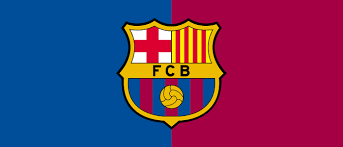

| Il Futbol Club Barcelona conosciutè una società polisportiva spagnola con sede nella città di Barcellona, nota soprattutto per la sua sezione calcistica. Fu fondata a Barcellona nel 1899 da un gruppo di calciatori svizzeri, britannici e catalani, guidati da Hans Gamper. La squadra di calcio milita in Primera División, la massima serie del campionato spagnolo di calcio, dalla prima edizione del torneo (stagione 1928-1929). |
|  |